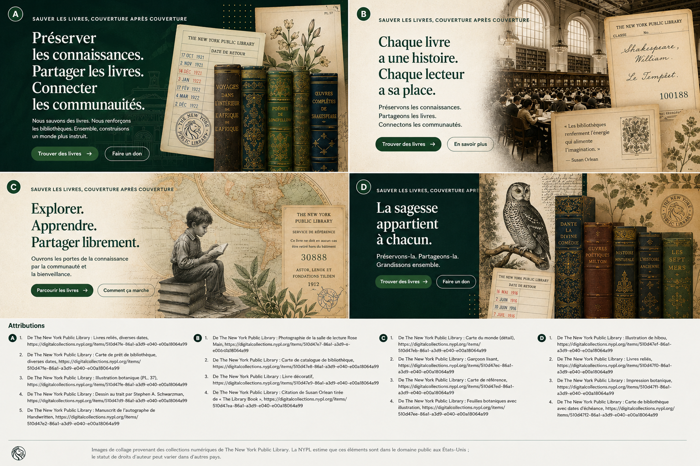

Les exemples institutionnels de cette page servent uniquement de représentation conceptuelle du flux de travail et n'impliquent ni partenariats ni déploiements existants.
Guide pour les institutions
Examinez les offres de livres avec assez de structure pour prendre de vraies décisions.
Let Books est pensé pour des processus favorables aux bibliothèques, mais aussi aux écoles, universités, archives et associations qui ont besoin d'un examen pratique et d'une coordination du retrait.

Quand ce guide vous concerne
- Vous examinez des livres proposés par des donateurs.
- Il vous faut une sélection structurée plutôt que des courriels informels.
- Vous souhaitez lier les décisions à des identifiants stables.
- L'origine des données, l'état et la faisabilité du retrait vous importent.
Qui peut être une institution
- Bibliothèques publiques et académiques
- Écoles et universités
- Archives et collections spécialisées
- Associations et autres organisations partenaires
Processus de revue de base
Le processus MVP est volontairement simple, car beaucoup d'institutions accepteront d'abord un tableur plutôt qu'un nouveau portail.
Recevez l'export
Ouvrez une liste avec des identifiants stables et des métadonnées lisibles.
Marquez les décisions
Choisissez souhaité, peut-être ou non souhaité et ajoutez un commentaire si nécessaire.
Renvoyez le fichier
Utilisez un flux connu sans nouveau compte obligatoire.
Importez les décisions
Le donateur récupère vos décisions sans association ambiguë par titre.
Créez la liste de retrait
Les exemplaires demandés sont regroupés par emplacements réels.
Coordonnez la remise
Retrait et livraison restent hors plateforme tant que des fonctions futures ne l'étendent pas explicitement.
Pourquoi l'origine des données compte
Les institutions doivent savoir si une donnée vient d'une personne, de l'OCR, d'un catalogue externe ou d'un import. La confiance et le statut de revue doivent être visibles.
La logistique physique décide encore
Un exemplaire demandé n'est utile que lorsque quelqu'un peut le retrouver. La liste de retrait par pièce, étagère et boîte rend cela praticable.
Exemple : Une bibliothèque municipale, un département universitaire et une archive locale examinent un même export d'un donateur privé et chacun choisit des exemplaires différents selon l'état et la pertinence du contenu.